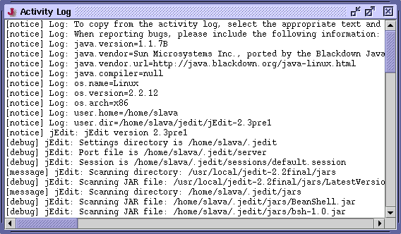

Before continuing any further, it is important to know about the so-called "activity log". jEdit writes the following information to the activity log:
All error messages and runtime exceptions
Information about your Java implementation (version, operating system, architecture, etc)
Information about loaded plugins
Messages when files are opened and closed. This can be useful in determining what caused an exception
The directory list search logs all file names that will be searched
Some plugins may log additional information as well
Utilities>Activity Log displays a window showing the current activity log. Text can be copied from the log by selecting it and pressing Control-C.
To clear the activity log, click the Clear Log button in the log window. To save the activity log to a file, click Save Log.
Figure 3-2. The activity log
